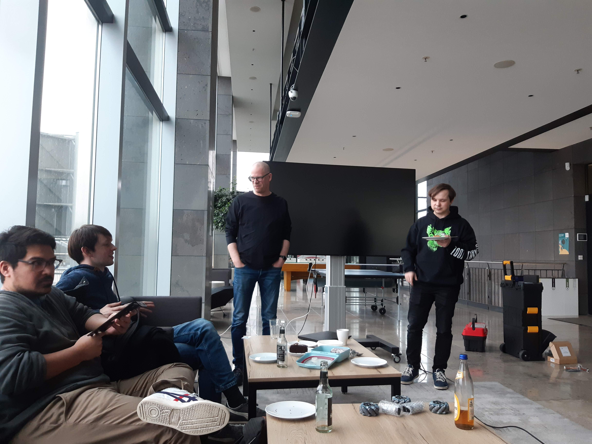

We officially started!
We are on the path!
16.02.2020 we had our first full day meeting where we set the architecture, milestones and started working on the milestones! To stay transparent we will use a Trello board, so everyone can see where we are standing and what we are working on right now.
Architecture
Lidar node
Lidar node is responsible to read data from installed lidar and publish it to the topic Laser.
Camera node
Camera node is responsible to get the image from the installed camera (in our case it is Intel RealSense D435) and publish images (we use stereo camera) to the topic Image.
IMU node
IMU node is responsible for reading the values from MPU6050 sensor. The node also puvlish the data to the topic IMU.
Joystick node
Joystick will be connected to the platform via Bluetooth. The node should read the status of each button/axes on the joystick and publish it to the topic Joy.
AI driver
Node should subscribe to topics Laser, Image, IMU, wheels obometry and responsible for autonomous driving. It should publish steering command to the topic CMD_AI.
Data recorder service
Data recorder should have two actions: start recording and stop recording. All recording should be stored in a ROS bag. We want to store all sensor data (topics Laser, Image, IMU), Joystic (topic Joy) and wheels odometry (topic Odometry.)
Teleop node
Teleop should provide the mapping from the joystick to action on the device. It should map Start/Stop recording, driving the platform and switching from autonomoous to human control modes.
Teleop node will subscribe to the topic Joy and map buttons. It will publish the driving command given from joystick to the topic CMD_Human.
MUX drive command
Responsible for switching or re-publishing between CMD_AI and CMD_Human ro the topic CMD. Basically, this node is responsible which comand value will be transfered to the motor, from the human (Joystick) or from the AI driver node.
Motor driver node
Node subscribes to the topic CMD and responsible for execution of the driving command. It will also publish the motors encoders calues to the topic Odometry.

Milestones
First milestone: Build the base platform
- assamble the robot
- drive around with a joystic
- able to record sensor data (stereo camera, imu, lidar, odometry, joystic)
- have batteries integrated
- simple demplyment model (startup scripts that start the robot ready drive via joystic, we can deploy new code with a simple script wihtout keyboard, monitor, mouse, sdcard swapping, dockerized build system)
- you can easily connect to the robot (AP or connect to hotspot, ethernet via cable
Second Milestone: Build the map, localize
- Integrate ROS navigation stack (build map, plan paths)
Third Milestone: Compete in a local competition
- Compete in a competition
Second and third milestones are generic and can be adopted on during the accomplisment of the forst milestone.
What is next?
We splitted in two teams and work on motor controller node and the image deployment for the NVIdia Jetson Nano.
Our next meeting will happen 1st of March. We also working hard on our first partnership and will announce the outcome soon.
Also once we are done with first tasks we will publish the tutorial.
Stay tuned! more is coming!